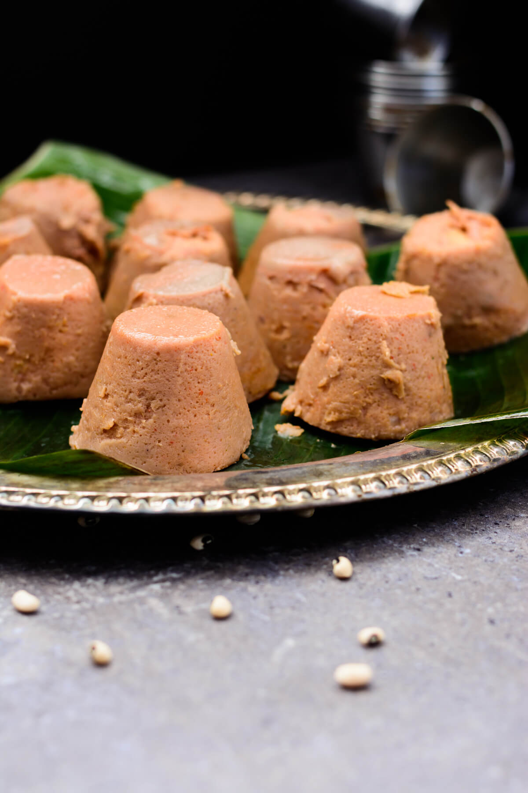

Nigerian Moi Moi

Description
A steamed bean pudding made from blended peeled beans, peppers, onions, and oil,
often enriched with fish, meat, or eggs. It’s soft, flavorful, and served as a side or main dish.
Ingredients
- Beans (peeled)
- Peppers (red bell & scotch bonnet)
- Onions
- Vegetable oil
- Protein (eggs, fish, meat)
- Stock cubes
- Salt
Steps
Steps to Prepare Nigerian Moi Moi
- Blend: Blend beans, onions, and oil until smooth.
- Season: Add stock cubes and salt.
- Fill: Pour mix into ramekins or leaves, add fish/meat/egg (if using).
- Steam: Steam for 45-60 minutes.
- Serve: Enjoy warm or cold.
Done!
Home